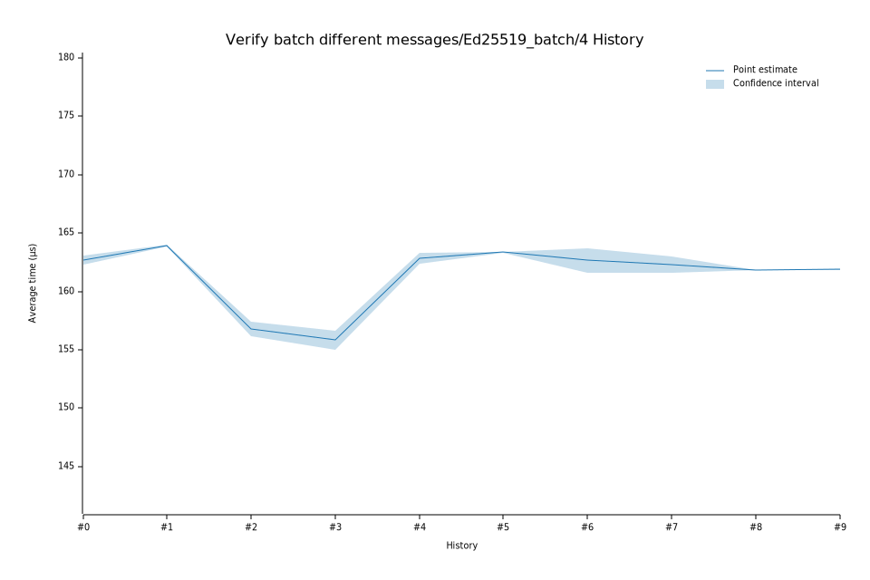

# 42023-02-09T12:48:15Z
|
Lower Bound |
Estimate |
Upper Bound |
| Value: |
162.33µs |
162.86µs |
163.33µs |
| Change in Value: |
+3.8316% |
+4.4063% |
+4.9628% |
No change in performance detected.
# 32023-02-08T18:56:15Z
|
Lower Bound |
Estimate |
Upper Bound |
| Value: |
154.99µs |
155.82µs |
156.65µs |
| Change in Value: |
-1.4912% |
-0.7585% |
-0.0220% |
No change in performance detected.
# 22022-12-05T08:44:40Z
|
Lower Bound |
Estimate |
Upper Bound |
| Value: |
156.18µs |
156.77µs |
157.39µs |
| Change in Value: |
-4.6522% |
-4.2138% |
-3.6289% |
No change in performance detected.
# 12022-11-14T11:57:05Z
|
Lower Bound |
Estimate |
Upper Bound |
| Value: |
163.86µs |
163.95µs |
164.02µs |
| Change in Value: |
+0.4283% |
+0.6538% |
+0.8874% |
No change in performance detected.
# 02022-11-04T13:35:26Z
|
Lower Bound |
Estimate |
Upper Bound |
| Value: |
162.31µs |
162.68µs |
163.04µs |